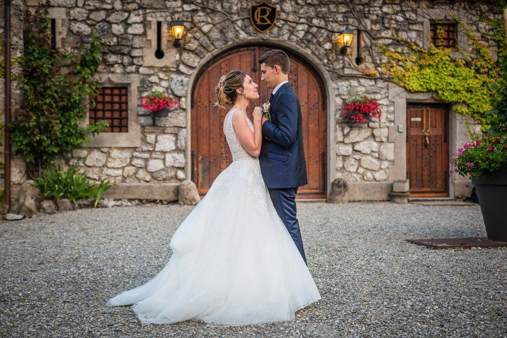
La cour d’honneur
où les mariés pourront réaliser leurs plus belles prises de vue

Souvenirs de mariés
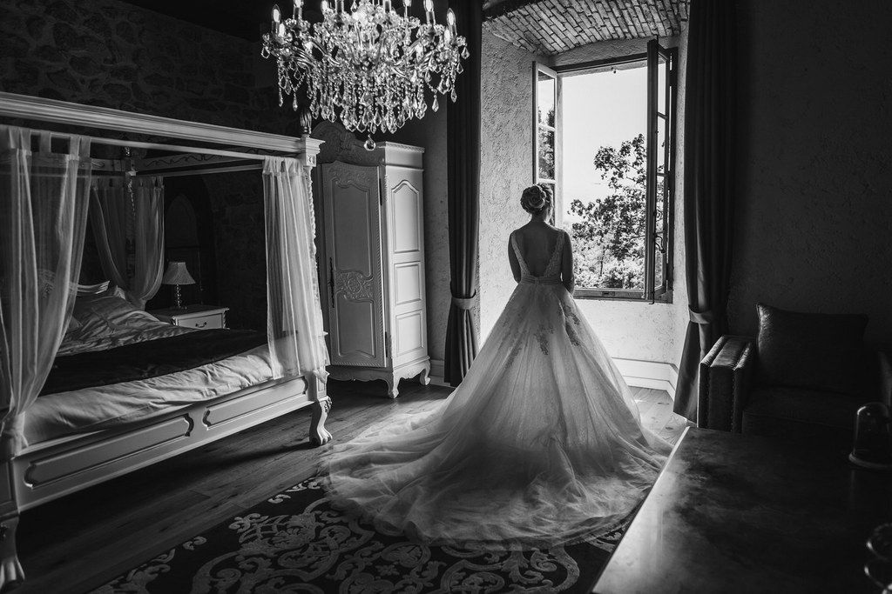
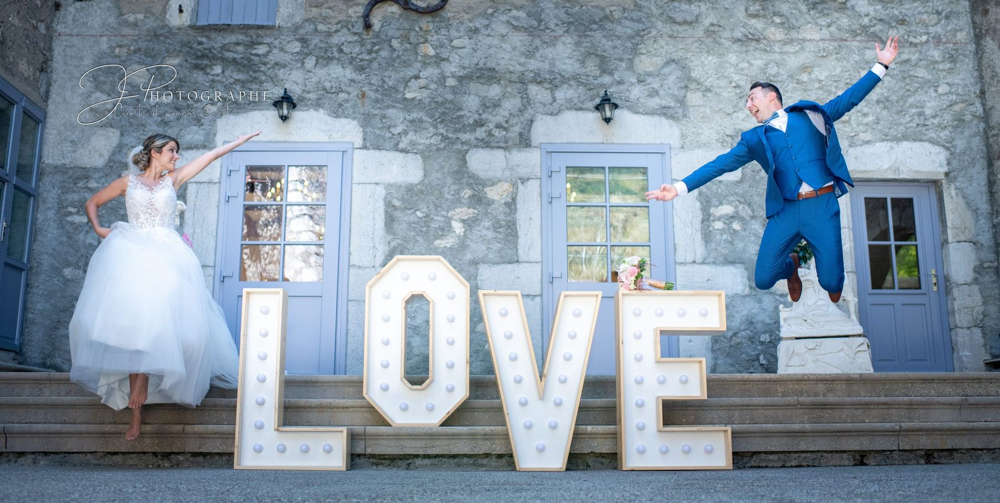
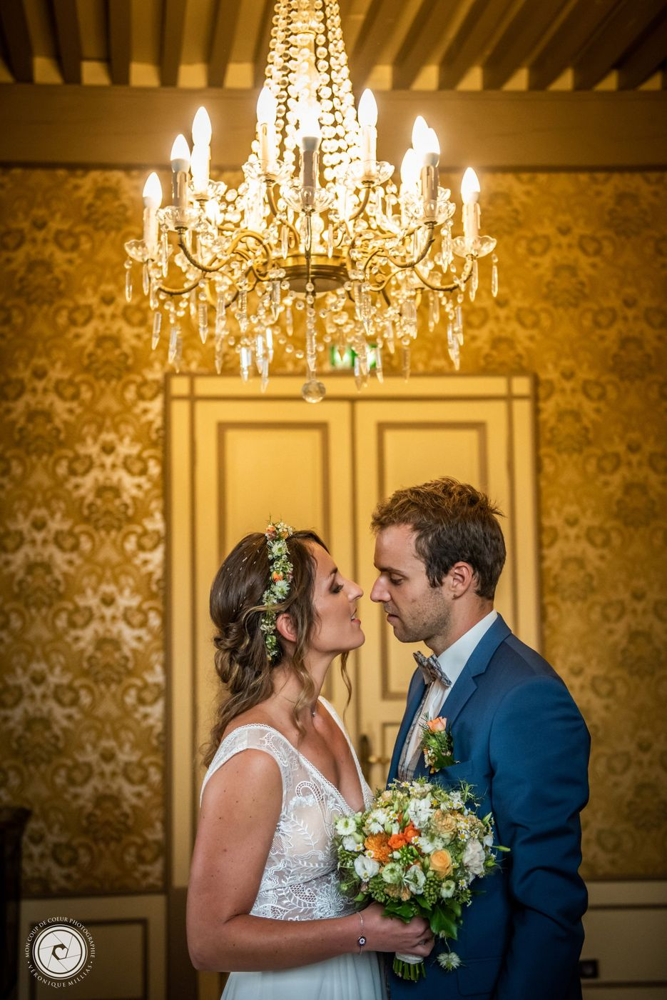
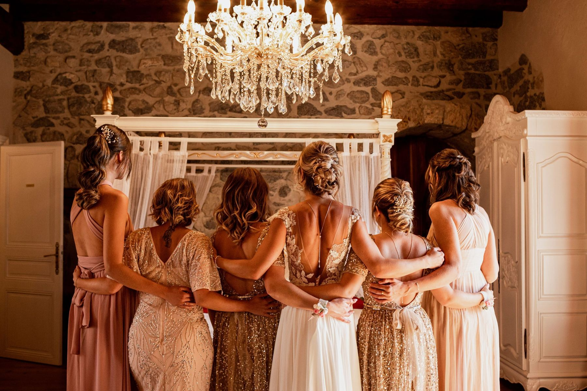
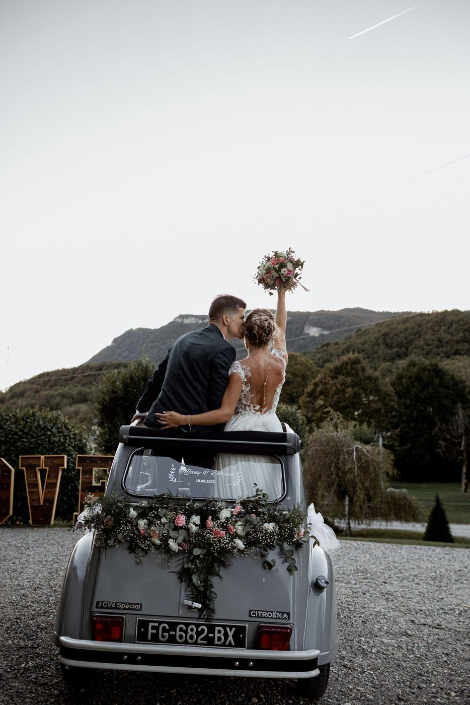
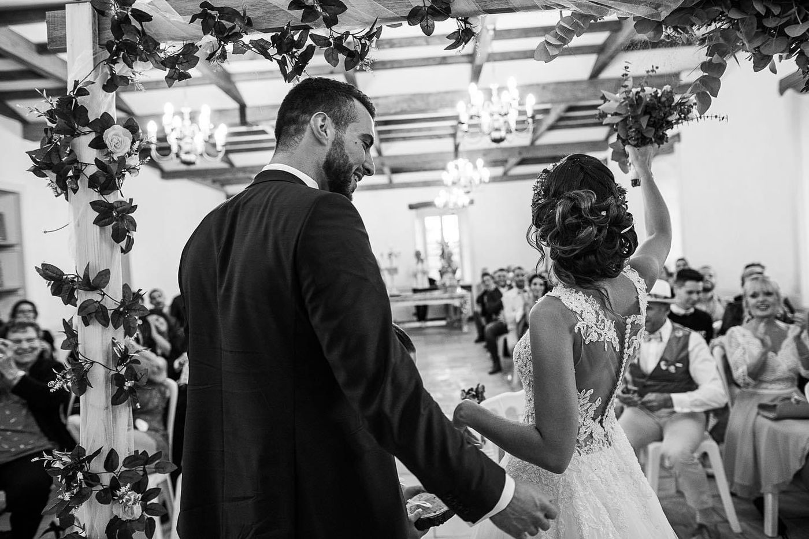
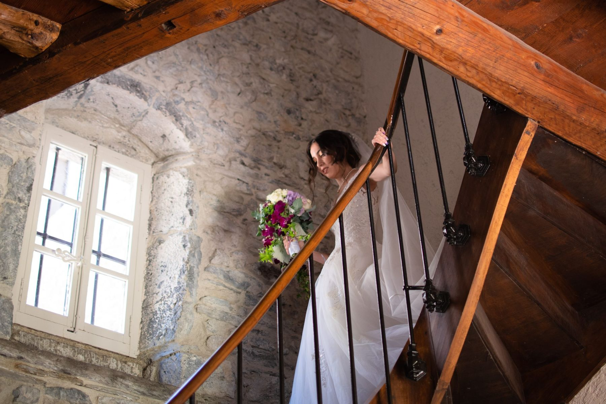

Du vin d’honneur à la nuit de noces

où les mariés pourront réaliser leurs plus belles prises de vue
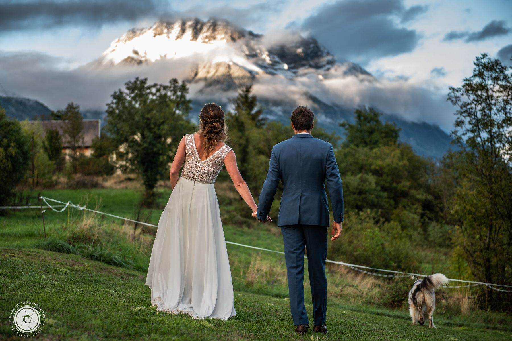
de 3,5 hectares à l’ombre des arbres centenaires

tables rondes et chaises pour le confort de vos convives

une suite nuptiale pour les mariés
Les quatre saisons
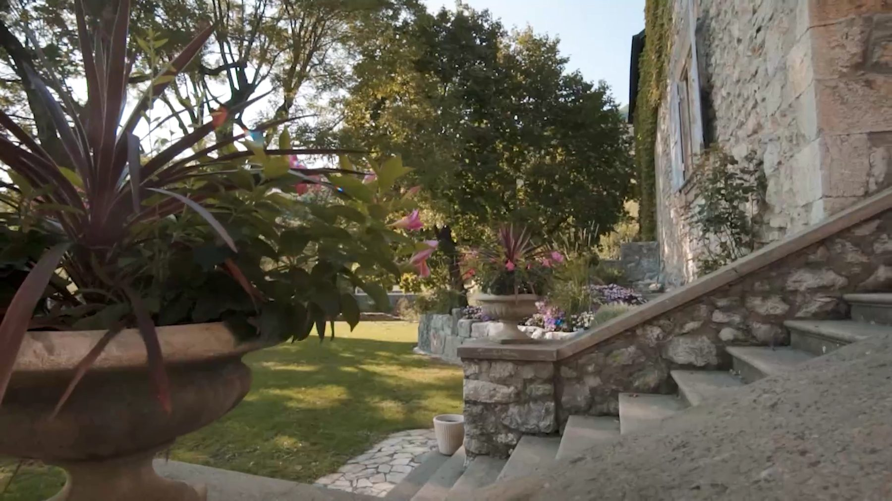
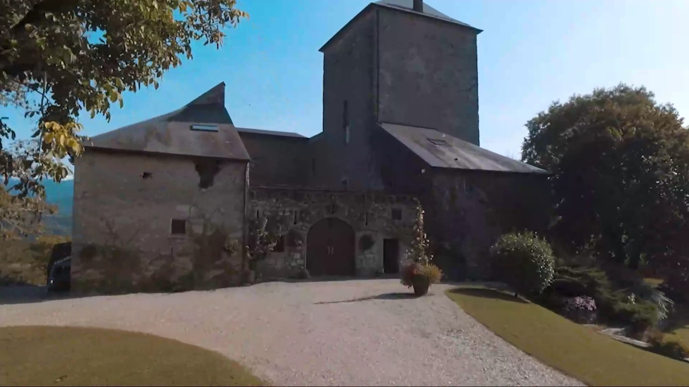
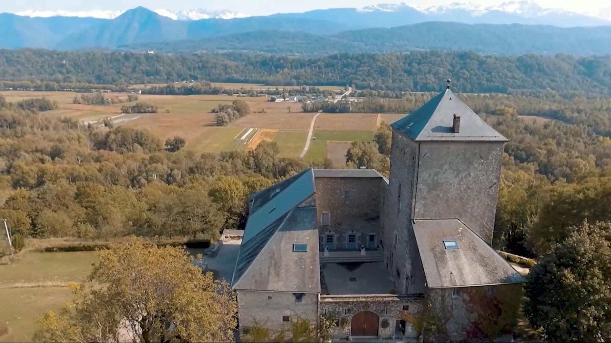
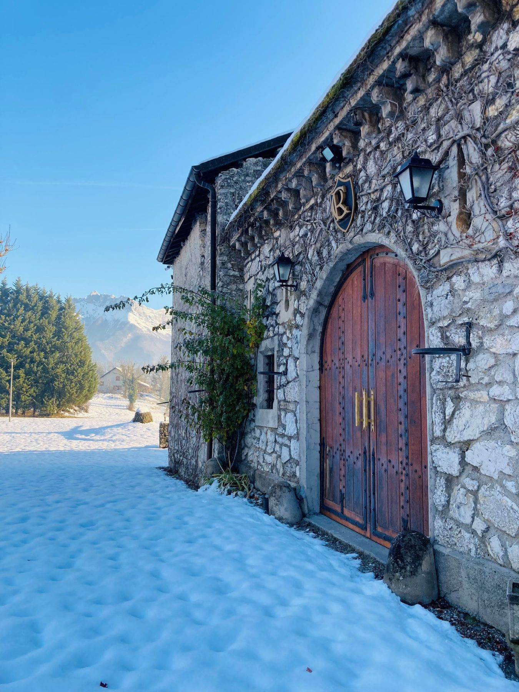
Ils s’y sont mariés
★★★★★Nous nous y sommes mariés. Le lieu est absolument magnifique ! L’équipe gérante attentive et conciliante. Nos invités ont tous été enchantés par l’ambiance du lieu calme, authentique et bien agencé. Le traiteur Aurelien Poncet a également ravi les convives par ses mets délicieux.
Laurie Cardinaux
★★★★★Nous venons de nous marier dans ce lieu de charme, un seul mot à dire : perfection ! Tous nos invités ont été unanimes, le lieu, le charme, les mets, le service des équipes d'Aurélien ont été largement au dessus de nos espérances. Nous ne pouvons que vous conseiller de le retenir pour le plus beau jour de votre vie ! Un grand merci à cette merveilleuse brigade.
Sophie Carera
★★★★★Nous nous sommes mariés le 2 Septembre au Domaine du Château de la Rive. Un grand merci à Aurélien Poncet et son équipe pour leur travail et professionnalisme irréprochable. Nous avons passé un week-end inoubliable et une journée de rêve. Le lieu est magnifique et le repas était exquis, encore, merci !
Julia Romano